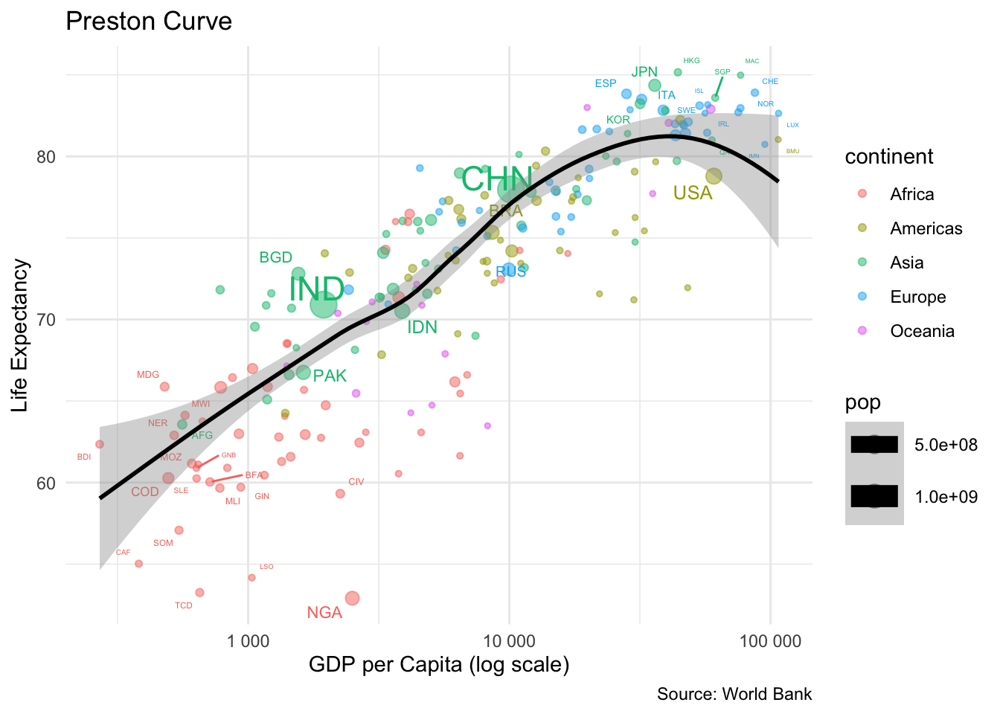

Week 5 Team Lab Assignment: Exercise Preston Curve
Authors
ABDUL HALIM BIN ABDUL RAHIM (2201627)
MIRZA ANAQI BIN MUHAMMAD HAIZAN (2200981)
ANG GUO ZHENG FREDERICK (2203322)
MARK PENG JUNG ZEN (2200849)
FONG KAH KIAN (2200727)
AMANDA CHAN HUI EN (2203417)
Published
June 7, 2024
1 Introduction
In a classic paper, Preston (1975) discussed scatter plots of life expectancy versus national income per capita (Figure 1.1), where each point represents a different country. The term “Preston curve” has since become commonly used for curves fitted to similar data, typically using the per-capita gross domestic product (GDP), instead of national income, as x-value. Preston (1975) and many others have used untransformed x-values and y-values. However, for a different approach to visualizing the data, the Swedish foundation Gapminder (2020) employs a logarithmic scale for income (Figure 1.2). The use of a logarithmic scale is justified because per-capita GDP, as well as many other economic indicators, exhibits a right-skewed distribution. This exercise adopts Gapminder’s approach by using a logarithmic scale for income.
1.1 Objectives
You will practice your ggplot2 skills by creating a plot that is comparable to the plot of life expectancy versus per-capita GDP by the Gapminder Foundation (Figure 1.3). Additionally, you will exercise using other tidyverse functions to prepare the data for plotting.
1.2 Data
You will need three data sets from the World Bank:
GDP per capita (current US$): https://data.worldbank.org/indicator/NY.GDP.PCAP.KD Life expectancy at birth, total (years): https://data.worldbank.org/indicator/SP.DYN.LE00.IN Population: https://data.worldbank.org/indicator/SP.POP.TOTL The CSV files on these pages are incorrectly formatted. Instead, please click on the EXCEL download button and save the downloaded XLS files in your project directory.
2 Preparing the Data
2.1 Data Import
Import the World Bank data for GDP per capita, life expectancy, and population as three tibbles.
library(tidyverse)
── Attaching core tidyverse packages ──────────────────────── tidyverse 2.0.0 ──
✔ dplyr 1.1.4 ✔ readr 2.1.5
✔ forcats 1.0.0 ✔ stringr 1.5.1
✔ ggplot2 3.5.1 ✔ tibble 3.2.1
✔ lubridate 1.9.3 ✔ tidyr 1.3.1
✔ purrr 1.0.2
── Conflicts ────────────────────────────────────────── tidyverse_conflicts() ──
✖ dplyr::filter() masks stats::filter()
✖ dplyr::lag() masks stats::lag()
ℹ Use the conflicted package (<http://conflicted.r-lib.org/>) to force all conflicts to become errors
Attaching package: 'scales'
The following object is masked from 'package:purrr':
discard
The following object is masked from 'package:readr':
col_factor
country: Data from the Excel columns titled “Country Name.” code: Data from the Excel columns titled “Country Code.” Either gdp_per_cap, life_exp or pop: Data for 2019 only.
Use left_join() to merge the three spreadsheets into a single tibble named countries containing five columns: country, code, gdp_per_cap, life_exp, and pop.
countries <- gdp_2019 %>%left_join(life_exp_2019, by =c("country", "code")) %>%left_join(pop_2019, by =c("country", "code"))
2.4 Identify Non-Country Rows
Use the countrycode() function to append a code_2 column and exclude non-country rows.
countries <- countries %>%mutate(code_2 =countrycode(code, origin ="wb", destination ="wb", warn =FALSE)) %>%filter(!is.na(code_2))
2.5 Append Continent Column
Use countrycode() to append a colummn containing the continent of each country.
countries <- countries %>%mutate(continent =countrycode(country, origin ="country.name", destination ="continent"))
Warning: There was 1 warning in `mutate()`.
ℹ In argument: `continent = countrycode(country, origin = "country.name",
destination = "continent")`.
Caused by warning:
! Some values were not matched unambiguously: Channel Islands, Kosovo
2.6 Remove Missing Data
Remove all rows from the countries tibble that contain any missing values to prevent ggplot2 from triggering a warning in subsequent tasks.
countries <- countries %>%drop_na()
2.7 Count Countries
How many countries are remaining in the countries tibble?
num_countries <-nrow(countries)num_countries
[1] 198
2.8 Prepare Country Labels
A subsequent task requires you to add country names as labels to the plot. To prepare for this task, add a label column to the data containing the three-letter codes of the following countries:
The 10 countries with the highest GDP. The 10 countries with the lowest GDP. The 10 countries with the longest life expectancy. The 10 countries with the shortest life expectancy. The 10 most populous countries. Please note that some countries may be included in multiple categories. For all other countries, the label should be an empty string.
top_gdp <- countries %>%top_n(10, gdp_per_cap)bottom_gdp <- countries %>%top_n(-10, gdp_per_cap)top_life_exp <- countries %>%top_n(10, life_exp)bottom_life_exp <- countries %>%top_n(-10, life_exp)top_pop <- countries %>%top_n(10, pop)label_countries <-bind_rows(top_gdp, bottom_gdp, top_life_exp, bottom_life_exp, top_pop) %>%distinct(country, .keep_all =TRUE)countries <- countries %>%mutate(label =ifelse(country %in% label_countries$country, code, ""))
3 Visualizing the Data
3.1 Set Up Basic Plot
As an initial step towards creating a plot similar to Figure 1.2, create a basic plot by using ggplot() and a geom_*() function to display one bubble per country. Choose suitable aesthetics for the plot and make the bubbles semi-transparent, which is an improvement compared to Gapminder’s approach.
ggplot(countries, aes(x = gdp_per_cap, y = life_exp, size = pop, color = continent)) +geom_point(alpha =0.5) +scale_x_log10() +theme_minimal()
3.2 Add Labels
Use geom_text_repel() to add the labels from the label column of the countries tibble. Set the show.legend argument equal to FALSE to exclude the text layer from the legends.
Use geom_smooth() to fit a single LOESS curve to all data points in the plot. Set the countries’ population as the weighting variable for the curve. Choose a neutral color for the curve to indicate that it is not specific to any continent.
ggplot(countries, aes(x = gdp_per_cap, y = life_exp, size = pop, color = continent)) +geom_point(alpha =0.5) +geom_text_repel(aes(label = label), show.legend =FALSE) +geom_smooth(method ="loess", aes(weight = pop), color ="black") +scale_x_log10() +theme_minimal()
Warning: Using `size` aesthetic for lines was deprecated in ggplot2 3.4.0.
ℹ Please use `linewidth` instead.
`geom_smooth()` using formula = 'y ~ x'
Warning: The following aesthetics were dropped during statistical transformation: size.
ℹ This can happen when ggplot fails to infer the correct grouping structure in
the data.
ℹ Did you forget to specify a `group` aesthetic or to convert a numerical
variable into a factor?
3.4 Add Annotations
Provide meaningful axis labels, legend labels and a title for the plot. Additionally, include a caption that credits the World Bank as the data source.
ggplot(countries, aes(x = gdp_per_cap, y = life_exp, size = pop, color = continent)) +geom_point(alpha =0.5) +geom_text_repel(aes(label = label), show.legend =FALSE) +geom_smooth(method ="loess", aes(weight = pop), color ="black") +scale_x_log10() +labs(title ="Preston Curve",x ="GDP per Capita (log scale)",y ="Life Expectancy",caption ="Source: World Bank") +theme_minimal()
`geom_smooth()` using formula = 'y ~ x'
Warning: The following aesthetics were dropped during statistical transformation: size.
ℹ This can happen when ggplot fails to infer the correct grouping structure in
the data.
ℹ Did you forget to specify a `group` aesthetic or to convert a numerical
variable into a factor?
3.5 Change x-Axis Scale
Change the x-coordinates to a logarithmic scale in the plot. Adjust the breaks and minor breaks of the logarithmic scale as shown in figure Figure 1.3 using the breaks_log() functions from the scales package. Customize the tick mark labels to be more reader-friendly, such as displaying “1,000” instead of the default “1e+03” format.
ggplot(countries, aes(x = gdp_per_cap, y = life_exp, size = pop, color = continent)) +geom_point(alpha =0.5) +geom_text_repel(aes(label = label), show.legend =FALSE) +geom_smooth(method ="loess", aes(weight = pop), color ="black") +scale_x_log10(breaks =breaks_log(), labels =label_number()) +labs(title ="Preston Curve",x ="GDP per Capita (log scale)",y ="Life Expectancy",caption ="Source: World Bank") +theme_minimal()
`geom_smooth()` using formula = 'y ~ x'
Warning: The following aesthetics were dropped during statistical transformation: size.
ℹ This can happen when ggplot fails to infer the correct grouping structure in
the data.
ℹ Did you forget to specify a `group` aesthetic or to convert a numerical
variable into a factor?

3.6 Change Size Scale
Use scale_size_area() to adjust the legend so that the areas of the bubbles represent populations of 1 million, 10 million, 100 million and 1 billion. Modify the labels in the legend from “1e+06”, “1e+07”, “1e+08”, and “1e+09” to more reader-friendly strings like “1M”, “10M”, “100M”, and “1B”. Increase the max_size argument to ensure that the bubble areas are approximately the same as in the Gapminder figure.
Warning: The following aesthetics were dropped during statistical transformation: size.
ℹ This can happen when ggplot fails to infer the correct grouping structure in
the data.
ℹ Did you forget to specify a `group` aesthetic or to convert a numerical
variable into a factor?
Warning: ggrepel: 2 unlabeled data points (too many overlaps). Consider
increasing max.overlaps
3.7 Change Color Scale
Change the color scale to the ColorBrewer palette “Set1,” which provides clearer contrasts than ggplot2’s default colors. Note that these colors are not the same as those in the Gapminder figure.
Warning: The following aesthetics were dropped during statistical transformation: size.
ℹ This can happen when ggplot fails to infer the correct grouping structure in
the data.
ℹ Did you forget to specify a `group` aesthetic or to convert a numerical
variable into a factor?
Warning: ggrepel: 2 unlabeled data points (too many overlaps). Consider
increasing max.overlaps
3.8 Override Transparency in Legend
Semi-transparent colors are effective for addressing overplotting in the bubble plot. However, they are not ideal for the legend, where we want clear color contrasts. Override the alpha aesthetic in the legend to remove transparency. Additionally, increase the sizes of the circles in the color legend to enhance readability. You can refer to section 11.3.6 in Wickham, Navarro and Pedersen (2021) for related examples.
Warning: The following aesthetics were dropped during statistical transformation: size.
ℹ This can happen when ggplot fails to infer the correct grouping structure in
the data.
ℹ Did you forget to specify a `group` aesthetic or to convert a numerical
variable into a factor?
Warning: ggrepel: 2 unlabeled data points (too many overlaps). Consider
increasing max.overlaps
3.9 Choose a ggplot2 Theme
Choose a ggplot2 theme and provide arguments to support your choice. There is no definitive right or wrong answer in this case, but you should clearly express your reasoning.
We will use theme_minimal() for ggplot2, and here is why:
Clean and Modern Look: The use of theme_minimal() makes the plot clean and contemporary, which is suitable for reading.
Data Focus: It minimizes the number of visual components that may distract from the core data itself, so the focus always remains on key insights.
Customization: It can be easily customized with further fine-tunings for specific aesthetic tastes and presentation requirements.
Warning: The following aesthetics were dropped during statistical transformation: size.
ℹ This can happen when ggplot fails to infer the correct grouping structure in
the data.
ℹ Did you forget to specify a `group` aesthetic or to convert a numerical
variable into a factor?
Warning: ggrepel: 2 unlabeled data points (too many overlaps). Consider
increasing max.overlaps
3.10 Reason About the Data
Write at least four sentences about the data. What does the plot reveal about the data? If you refer to specific countries, make sure to add the corresponding labels in the plot if necessary.
The life expectancy versus GDP per capita plot, known as the Preston Curve, shows a few important facts:
Strong Positive Correlation: This means that a higher GDP per capita positively correlates with life expectancy. In most cases, countries with higher GDP per capita will also have higher life expectancies.
Diminishing Returns: The relationship has the property of diminishing returns; an increase in GDP per capita causes more of an effect on life expectancy in poorer countries than it does in wealthier countries. This is why GDP per capita is shown on a logarithmic scale.
Outliers and Variability: Some countries, however, will tend to be very far from the trend. For example, certain countries may have relatively high GDP but a low life expectancy, which could indicate some other problems it carries—like a poor healthcare system or social instability.
Continental Differences: It becomes evident there are disparities across continents. Most of the countries of Africa, which appear in a separate color, tend to be grouped toward the lowest ends of GDP per capita and life expectancy, reflecting that this is an economically deprived area with unfavorable health conditions.
Warning: The following aesthetics were dropped during statistical transformation: size.
ℹ This can happen when ggplot fails to infer the correct grouping structure in
the data.
ℹ Did you forget to specify a `group` aesthetic or to convert a numerical
variable into a factor?
Warning: ggrepel: 2 unlabeled data points (too many overlaps). Consider
increasing max.overlaps